유통관리사-2급 (2019-06-30 기출문제)
1과목: 유통물류일반
1. 하역에 대한 내용으로 옳은 것은?
- 물류과정에서 하역이 자체적으로 창출하는 효용은 없다.
- 생산품의 이동, 운반을 말하며, 제조공정 및 검사공정을 포함한다.
- 사내하역(material handling)을 포함하나, 선적, 양하를 위한 항만하역은 포함하지 않는다.
- 기계화, 자동화가 진행되면서 비성력화가 급속히 진행되고 있다.
- 컨테이너에 물품을 넣는 것을 디배닝(devanning), 빼는 것을 배닝(vanning)이라고 한다.
(정답률: 47%)

2. 공급체인관리를 도입할 필요성이 증가하게 된 배경으로 옳은 것은?
- BPR(business process re-engineering) 노력의 감소
- 기업의 핵심역량 집중화 및 주변사업의 외부조달 활성화
- 부가가치 원천이 기업 외부에서 내부로 이동
- 매스 커스터마이제이션(mass customization)의 쇠퇴
- 완성품 제조기업의 외부조달 확실성 증대
(정답률: 75%)
3. 체화재고(stockpile)측면의 관리 대상으로 옳지 않은 것은?
- 매출 수량 대비 과다한 재고
- 매출이 발생되지 않는 상품
- 행사 종료로 인한 잔량 재고
- 소매점의 취급종료 상품
- 수요의 불확실성에 대비한 재고
(정답률: 63%)
4. 공급체인관리의 주요 원칙에 관한 설명으로 옳지 않은 것은?
- 고객의 가치와 니즈를 이해하고 만족시킨다.
- 장기적으로 강력한 파트너십을 구축한다.
- 각종 정보기술을 효과적으로 활용한다.
- 경로 전체를 통합하는 정보시스템 보다는 각각의 독립성을 우선시 한다.
- 공급체인 파트너 간의 커뮤니케이션이 효과적이어야 하고 적시에 이루어져야 한다.
(정답률: 85%)
5. 글로벌 소싱의 발전 단계를 옳게 나열한 것은?
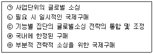
- ㉣ - ㉡ - ㉤ - ㉠ - ㉢
- ㉡ - ㉣ - ㉢ - ㉠ - ㉤
- ㉣ - ㉤ - ㉡ - ㉢ - ㉠
- ㉡ - ㉣ - ㉤ - ㉢ - ㉠
- ㉤ - ㉡ - ㉣ - ㉢ - ㉠
(정답률: 69%)
6. 아래 글상자에서 물류예산안 편성과정의 단계들이 옳게 나열된 것은?
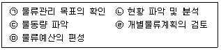
- ㉠ - ㉡ - ㉢ - ㉣ - ㉤
- ㉡ - ㉢ - ㉣ - ㉤ - ㉠
- ㉢ - ㉣ - ㉤ - ㉠ - ㉡
- ㉣ - ㉤ - ㉠ - ㉡ - ㉢
- ㉤ - ㉠ - ㉡ - ㉢ - ㉣
(정답률: 72%)
7. 매장에서 근무할 직원과 근로계약을 체결하는 경우 근로계약서에 필수적으로 들어가야 할 사항으로 옳지 않은 것은?
- 임금 - 구성항목, 계산방법, 지급방법
- 복리후생 – 각종 명절, 근로자의 날의 복지 혜택
- 근로시간 – 주당 근무시간, 휴게 시간 등
- 연차유급 휴가 – 1년 이상 근무 시 휴가일수
- 근무 장소 및 업무 – 근무할 장소와 담당 업무
(정답률: 63%)
8. 사전에 설정된 성과표준이나 절댓값을 기준으로 조직원의 성과를 평가하는 방법으로 옳지 않은 것은?
- 행동기준평가법
- 중요사건 기술법
- 서면보고서
- 대인비교법
- 360도 피드백
(정답률: 48%)
9. 제시된 그림은 확보해야 할 통제가능성 및 투자비의 높낮이에 따라 생산자들이 선택할 가능성이 높은 유통경로를 나타낸 것이다. 생산자가 간접유통경로를 선택할 가능성이 가장 높은 경우로 옳은 것은?
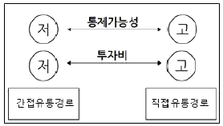
- 구매자에게 원스톱 쇼핑(one-stop shopping)이 매우 중요한 경우
- 중요한 영업비밀이 있는 경우
- 상품 판매를 위해 높은 수준의 서비스나 일관된 경험을 제공하는 것이 중요한 경우
- 상품이 고가이고, 복잡하며 고기술형인 경우
- 상품을 취급할 수 있는 유능한 중간상들이 많지 않은 경우
(정답률: 58%)
10. 기업의 재무제표에 관련된 설명으로 가장 옳지 않은 것은?
- 재무상태표 : 일정시점 현재 기업의 자산, 부채, 주주지분의 금액을 제시
- 손익계산서 : 일정기간 동안 수행된 기업활동의 결과로서 주주지분이 어떻게 증가, 감소하였는지 보여줌
- 현금흐름표 : 일정기간 동안 수행된 기업의 활동별로 현금유입과 현금유출을 측정하고 그 결과 기말의 현금이 기초에 비해 어떻게 변동되었는지 나타냄
- 이익잉여금처분계산서 : 주주총회의 승인을 얻어 확정될 이익잉여금 처분예정액을 표시함
- 연결재무제표 : 한 기업의 현금흐름표, 대차대조표, 손익계산서의 내용을 하나의 표로 작성하여 정리한 재무제표
(정답률: 35%)
11. 경로성과의 양적 척도 또는 질적 척도의 예들이 모두 옳게 나열된 것은?
- 양적 척도 : 단위당 총 유통비용, 선적비용, 경로과업의 반복화 수준
- 양적 척도 : 고객불평 수, 주문처리에서의 오류수, 기능적 중복 수준
- 양적 척도 : 가격인하 비율, 선적오류 비율, 악성부채비율
- 질적 척도 : 경로통제능력, 경로 내 혁신, 고객 추천수
- 질적 척도 : 신기술의 독특성, 재고부족 방지비용, 경로몰입수준
(정답률: 62%)
12. 아래 글 상자의 설명과 경로구성원 파워(power)의 원천을 옳게 연결한 것은?
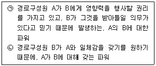
- ㉠ - 정보적 파워, ㉡ - 준거적 파워
- ㉠ - 강압적 파워, ㉡ - 전문적 파워
- ㉠ - 준거적 파워, ㉡ - 합법적 파워
- ㉠ - 보상적 파워, ㉡ - 전문적 파워
- ㉠ - 합법적 파워, ㉡ - 준거적 파워
(정답률: 80%)
13. 경영혁신(management innovation)의 성공요건에 관한 설명으로 옳지 않은 것은?
- 최고경영자의 강력한 의지와 지원이 필요하다.
- 경영혁신의 목표와 방법, 기대효과에 대해 충분히 설명한다.
- 변화하지 않으면 도태될 수 있다는 긴박감과 위기감은 조성하지 않는다.
- 변화관리를 위한 전문적인 체계와 기법, 전문가나 전담부서를 활용한다.
- 세밀한 사전 준비와 사후 관리 등을 통해 혁신이 계획대로 추진되고 정착될 수 있도록 노력한다.
(정답률: 86%)
14. 기업이 갖춰야 할 핵심역량의 조건에 대한 설명으로 옳지 않은 것은?
- 역량이 경쟁자 대비 높은 고객가치를 창출할 수 있도록 지원해야 한다.
- 역량이 시장에서 쉽게 거래될 수 있어야 한다.
- 역량 모방이 불가능해야 한다.
- 역량의 희소성이 있어야 한다.
- 역량이 대체 불가능한 능력이어야 한다.
(정답률: 75%)
15. 최근에 진행되고 있는 유통환경의 변화에 관한 설명으로 옳지 않은 것은?
- 구매의사결정과정에서 온라인과 오프라인간의 경계가 더욱 견고해졌다.
- 1인 가구의 증가로 인해 기존의 유통트렌드가 변화하고 있다.
- 남여 성별 고정역할의 구분이 약해짐으로 인해 소비시장도 변하고 있다.
- 시간의 효율적 사용을 원하는 고객의 요구가 증가하고 있다.
- 고객이 직접 해외에서 구매하는 현상이 증가하고 있다.
(정답률: 82%)
16. 조직의 외부에 존재하면서 조직의 의사결정이나 전반적인 조직 활동에 영향을 미치는 외부환경(external environment) 중 거시환경(macro environment) 요소로 옳지 않은 것은?
- 시장구조적 환경
- 경제적 환경
- 기술적 환경
- 인구통계적 환경
- 정치ㆍ법률적 환경
(정답률: 55%)
17. 유통경로 상 강력한 파워를 갖고 있는 구성원의 '우월적 지위의 남용'에 대한 사례로 옳지 않은 것은?
- 경쟁자 제품을 미리 망가뜨려 놓은 다음에 비교 테스트를 해서 판매계약을 따오는 사례
- 백화점이 경품행사를 하면서 경품비용을 납품업체의 상품대금에서 공제하는 사례
- 대금지불 조건을 자신에게 일방적으로 유리하게 정하는 사례
- 대금지급 시기를 일방적으로 늦추는 사례
- 백화점이 납품업체에게 판매사원을 파견하도록 요구한 다음, 이들을 포장이나 물품하역 등 백화점 고유업무에 투입시키는 사례
(정답률: 76%)
18. 유통산업발전법(시행 2018.5.1.)(법률 제14977호, 2017.10.31., 일부 개정)의 적용에서 배제되는 유통기관이 아닌 것은?
- 농수산물도매시장
- 농수산물공판장
- 민영농수산물도매시장
- 가축시장
- 중소유통공동도매물류센터
(정답률: 52%)
19. 유통경로가 창출하는 효용 가운데 아래 글상자가 설명하는 효용으로 옳은 것은?
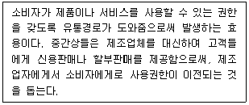
- 시간효용
- 장소효용
- 소유효용
- 보관효용
- 기술효용
(정답률: 80%)
20. 유통업체들 간의 경쟁을 유발하여 소비자 가격을 인하하기 위해, 유통업체가 자율적으로 판매가격을 정해서 표시할 수 있도록 허용하는 제도는?
- 하이로우(high-low) 제도
- EDLP 제도
- 노마진 제도
- 오픈프라이스(open price) 제도
- 권장소비자가격 제도
(정답률: 77%)
21. 아래 글상자 (㉠)과 (㉡)에 들어갈 용어가 옳게 나열된 것은?
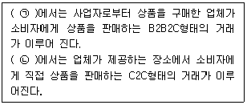
- ㉠ 오픈마켓, ㉡ 카탈로그마케팅
- ㉠ 카탈로그마케팅, ㉡ 소셜커머스
- ㉠ 소셜커머스, ㉡ 카탈로그마케팅
- ㉠ 소셜커머스, ㉡ 오픈마켓
- ㉠ 홈쇼핑, ㉡ T 커머스
(정답률: 72%)
22. 모든 도매기능을 제공하는 완전기능 도매상과 달리 특징적인 몇 가지의 도매기능을 특화하여 수행하는 한정기능 도매상으로 옳지 않은 것은?
- 직송 도매상
- 현금무배달 도매상
- 한정상품 도매상
- 트럭 도매상
- 진열 도매상
(정답률: 53%)
23. 전략 유형을 시장대응전략과 경쟁우위전략으로 구분할 때 시장대응전략만을 묶은 것으로 옳은 것은?
- 제품/시장믹스전략, 포트폴리오전략
- 원가우위전략, 포트폴리오전략
- 차별화전략, 집중화전략
- 제품/시장믹스전략, 차별화전략
- 제품수명주기 전략, 집중화 전략
(정답률: 58%)
24. 수직적 마케팅 시스템의 계약형 경로에 해당하지 않는 것은?
- 소매상 협동조합
- 제품 유통형 프랜차이즈
- 사업형 프랜차이즈
- 도매상 후원 자발적 연쇄점
- SPA브랜드
(정답률: 60%)
25. 유통경로 구성원의 기능을 크게 전방기능 흐름, 후방기능 흐름, 양방기능 흐름으로 나눌 때, 다음 중 후방기능 흐름만으로 바르게 짝지어 진 것은?
- 물적 소유, 소유권
- 협상, 금융
- 주문, 대금 결제
- 소유권, 협상
- 물적 소유, 위험부담
(정답률: 61%)
2과목: 상권분석
26. 점포를 개설하기 위해서는 법률이 정하는 행정기관에 신고‧지정‧등록 또는 허가 절차를 밟아야 하는 경우가 많다. 점포 개설을 위해 “허가”를 받아야 하는 경우는?
- 다른 편의점에 인접한 편의점
- 약사 또는 한약사가 개설하는 약국
- “유통산업발전법”(법률 제14997호, 2017. 10. 31.,일부개정) 상의 대규모점포
- 전통상업보존구역에 개설하는 “유통산업발전법” 상의 준대규모점포
- 위에는 해당하는 경우가 없음
(정답률: 35%)
27. 동선(動線)에 대한 설명 중에서 가장 옳지 않은 것은?
- 고객이 주로 승용차로 내점하는 점포의 경우에는 주 주차장에서 주 출입구까지가 동선이 된다.
- 올라가는 에스컬레이터의 경우에는 올라가기 전, 내려가는 에스컬레이터의 경우에는 내려가기 전이 최적의 입지가 된다.
- 대규모 소매점은 고객이 각 층별로 돌아보기 때문에 각 층이 자석이 되고 이를 연결하는 에스컬레이터가 동선이 된다.
- 인스토어형의 동선의 경우, 주 출입구에서 에스컬레이터까지가 주동선이 된다.
- 고객의 내점 수단이 도보인 경우 주 출입구에서 에스컬레이터까지가 주동선이 된다.
(정답률: 54%)
28. 다음 중 소매상권의 크기와 형태를 결정하는 직접적인 요인이라고 보기 어려운 것은?
- 주변의 인구분포
- 상품의 종류
- 점포의 입지
- 종업원의 친절도
- 점포에 대한 접근성
(정답률: 82%)
29. 소매점포의 접근성에 관한 아래의 내용 중에서 옳은 것은?
- 점포의 입구는 한 개로 집중하는 것이 좋다.
- 점포를 건축선에서 후퇴하여 위치시키면 시계성, 인지성을 떨어뜨리므로 바람직하지 않다.
- 보도의 폭이 좁을수록 보행자의 보속이 느려지므로, 소매점에 대한 시계성이나 인지성을 높일 수 있다.
- 계단이 있거나 장애물이 있는 건물은 목적성이 낮고 경쟁점이 많은 업종에 상대적으로 유리하다.
- 고객의 목적구매 가능성이 높은 업종은 접근성이 시계성에 별 영향을 미치지 않는다.
(정답률: 57%)
30. 아래 글상자의 내용 가운데 상권분석 및 입지전략수립의 목적으로 타당한 것만을 나열한 것은?
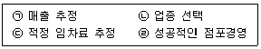
- ㉠
- ㉠, ㉡
- ㉠, ㉢
- ㉠, ㉡, ㉢
- ㉠, ㉡, ㉢, ㉣
(정답률: 74%)
31. 아래 글상자에 기술된 소매점포의 매출 추정 방법의 유형으로 가장 옳은 것은?
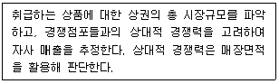
- 비율법
- 유추법
- 회귀분석법
- 체크리스트법
- 확률모형적용법
(정답률: 27%)
32. 전통적인 도심 상업지역인 중심상업지역(CBD)의 경쟁우위 요인으로 가장 옳은 것은?
- 대중교통이 편리해 유동인구가 많다.
- 원래 계획적으로 개발되어 쇼핑이 편리하다.
- 고객용 주차공간이 충분하다.
- 점포가 산재되어 상권범위가 좁다.
- 주거인구가 지속적으로 증가한다.
(정답률: 72%)
33. 다음의 여러 상권분석 방법 가운데서 기존 점포를 이용하는 소비자의 공간적 분포 분석에 주로 활용되는 방법은?
- 라일리(Reilly)의 소매인력모형법
- 허프(Huff)의 소매인력법
- 고객점표법(customer spotting technique)
- 아날로그(analog) 방법
- 컨버스(Converse)의 소매인력이론
(정답률: 58%)
34. 일반적으로 소매점의 입지결정에 영향을 미치는 요인으로서 가장 옳지 않은 것은?
- 자동차의 보급률
- 주택단지의 분포
- 행정구역의 경계
- 소매단지의 분포
- 소매상권의 계층화 정도
(정답률: 47%)
35. 넬슨(R. L. Nelson)은 소매점이 입지를 선정할 때 지켜야 할 여덟가지 원칙 중에서 향후 생길 수 있는 경쟁점포의 입지, 규모, 형태 등을 고려하여 자신의 사업장이 경쟁력을 유지할 수 있을지를 확인해야 한다는 원칙은 무엇인가?
- 경쟁점포 회피의 원칙
- 상권 잠재력의 원칙
- 점포 접근가능성의 원칙
- 입지 누적흡인력의 원칙
- 입지 양립성의 원칙
(정답률: 46%)
36. 소매점포를 개점하기 전에 실시하는 투자분석에 대한 설명으로 가장 옳지 않은 것은?
- 예상매출액을 기준으로 손익분석을 실시한다.
- 매출이익, 영업이익, 경상이익, 순이익 등 다양한 이익을 추정한다.
- 투자수익률은 연간 매출이익을 총 투자액으로 나눈 것이다.
- 투자수익률을 12로 나누어 월단위의 투자회수기간을 추정한다.
- 투자회수기간은 짧을수록 바람직하다.
(정답률: 41%)
37. 상권분석방법은 규범적 모형(normative methods)과 기술적 방법(descriptive methods)으로 구분될 수 있다. 이 중 기술적 방법에 포함될 수 있는 하나는?
- 공간적 상호작용모델
- 중심지이론
- 유추법
- 라일리(Reilly)의 소매인력이론
- 컨버스(Converse)의 소매분기점
(정답률: 58%)
38. 아래의 내용 중 크리스탈러(Christaller)의 중심지이론과 관련된 설명으로 적절하지 않은 것은?
- 중심지는 배후거주지역에 대해 다양한 상품과 서비스를 제공하고 교환의 편의를 도모하기 위해 상업 및 행정기능이 밀집된 장소를 말한다.
- 중심지 간에 상권의 규모를 확대하기 위한 경쟁이 발생되어 배후지가 부분적으로 중첩되는 불안정한 구조가 형성될 수 있다.
- 최대도달거리란 중심지가 수행하는 유통서비스기능이 지역거주자들에게 제공될 수 있는 최대(한계)거리를 말한다.
- 상업중심지의 정상이윤 확보에 필요한 최소한의 수요를 발생시키는 상권범위를 최소수요 충족거리라고 한다.
- 중심지가 한 지역 내에서 단 하나 존재한다면 가장 이상적인 배후상권의 형상은 정육각형으로 형성될 것이다.
(정답률: 51%)
39. 소매단지의 “업종친화력”은 입점한 소매점들의 업종 연관성을 의미한다. 업종친화력이 높으면 누적유인의 효과가 커지는 반면, 차별화에 실패하면 인근점포들과 극심한 경쟁을 벌여야 한다. 따라서 점포입지를 선정할 때는 상업단지의 업종친화력을 고려해야 한다. 일반적으로 업종친화력이 가장 낮은 상업단지는?
- 대학가 상가
- 부도심 역세권 상가
- 사무실 지역 상가
- 대학입시학원가 상가
- 작은 평수 아파트의 단지 상가
(정답률: 41%)
40. 최근 상권분석을 위해 활용도가 높아지고 있는 GIS(geographic information system)에 대한 설명으로 옳지 않은 것은?
- 컴퓨터를 이용한 지도작성체계와 데이터베이스관리체계(DBMS)의 결합이다.
- 지도레이어는 점, 선, 면을 포함하는 개별 지도형상으로 구성되어 있다.
- gCRM을 실현하는 데 기본적 틀을 제공할 수 있다.
- 주제도작성, 데이터 및 공간조회, 버퍼링(buffering)을 통해 효과적인 상권분석이 가능하다.
- 심도 있는 분석을 위해 상권의 중첩(overlay)을 표현하는 작업은 아직 한계점으로 남아있다.
(정답률: 75%)
41. 다수의 점포를 운영하는 체인점 등에서 비교적 활용도가 높은 회귀분석(regression analysis)의 기본적 특성이나 적용과정에 대한 설명으로 내용이 옳지 않은 것은?
- 실무적으로는 유사한 거래특성과 상권을 가진 점포들의 표본을 충분히 확보하기 어렵다는 문제점을 지닌다.
- 모형의 독립변수들이 서로 독립적이고 상호관련성이 없다고 가정하는 회귀분석의 기본 특성을 고려해야 한다.
- 단계적 회귀분석(stepwise regression)기능을 사용하면 다중공선성의 문제를 해결하는데 도움이 될 수 있다.
- 다양한 변수를 체계적으로 고려하여 각 변수들이 점포의 성과에 미치는 상대적인 영향에 대해 계량적으로 설명할 수 있다.
- 루스(Luce)의 선택공리를 적용하였으므로 허프(Huff)모델과 같이 확률선택모형으로 분류하기도 한다.
(정답률: 53%)
42. 다양한 입지조건 중 도로의 구조나 통행로의 특성에 따라 입지의 유리함과 불리함을 설명할 때 일반적으로 옳지 않은 것은?
- T형 교차로의 막다른 길에 점포가 입지한 경우 4방향 교차로에 비해 불리하다.
- 'C'자와 같이 굽은 곡선형 도로의 안쪽에 입지해 있는 점포는 시계성에 있어서 불리하다.
- 평지의 주도로와 만나는 경사진 보조도로에 입지한 점포는 평지보다 시계성에 있어 불리하다.
- 점포의 업종별로 인근 거주자의 출퇴근 동선(방향)에 따라 입지의 매력도 평가가 달라질 수 있다.
- 방사형 도로에 있어서 교차점은 통행이 분산되는 지점으로 상대적으로 불리하다.
(정답률: 57%)
43. 입지의 지리적 조건에 관한 아래의 내용 중에서 옳지 않은 것은?
- 이용 측면에서는 사각형의 토지가 좋다.
- 삼각형 토지의 좁은 면은 좋은 입지가 될 수 있다.
- 일정규모 이상의 면적이라면 자동차 출입이 편리한 각지(角地)가 좋다.
- 인지성이 좋은 지역이 좋은 입지이다.
- 직선 도로의 경우 시계성이 좋고 좌·우회전이 용이한 도로변이 좋다.
(정답률: 76%)
44. 다음 상권과 입지의 기본적 개념과 특징에 관련된 설명 중에서 옳지 않은 것은?
- '입지를 강화한다'는 것은 점포가 더 유리한 조건을 갖출 수 있도록 점포의 속성들을 개선하는 것을 의미한다.
- 상권은 점포를 이용하는 소비자들이 분포하는 공간적 범위를 의미하거나 점포의 매출이 발생하는 지역범위이다.
- 입지는 점포를 경영하기 위해 선택한 장소 또는 그 장소의 부지와 점포주변의 위치적 조건을 의미한다.
- 입지 평가항목에는 주변 거주인구, 유동인구, 경쟁점포의 수 등이 있고 상권 평가항목에는 점포의 면적, 층수, 교통망 등이 있다.
- 상권은 일정한 공간적 범위(boundary)로 표현되고 입지는 일정한 위치를 나타내는 주소나 좌표를 가지는 점(point)으로 표시된다.
(정답률: 67%)
45. 상권의 경계를 파악하기 위해 간단하게 활용할 수 있는 티센다각형(Thiessen polygon) 모형에 대한 설명으로 옳지 않은 것은?
- 공간독점접근법에 기반한 상권 구획모형의 일종이다.
- 소비자들이 가장 가까운 소매시설을 이용한다고 가정한다.
- 소매 점포들이 규모나 매력도에 있어서 유사하다고 가정한다.
- 일반적으로 티센다각형의 크기는 경쟁수준과 정의 관계를 가진다.
- 신규점포의 입지가능성을 판단하기 위한 상권범위 예측에 사용될 수 있다.
(정답률: 53%)
3과목: 유통마케팅
46. 고객관계관리에 대한 설명으로 옳지 않은 것은?
- 시장점유율보다는 고객점유율에 비중을 둔다.
- 고객획득보다는 고객유지에 중점을 두는 것이 바람직하다.
- 상품판매보다는 고객관계에 중점을 둔다.
- 획일적 메시지보다는 고객요구에 부합하는 맞춤메시지를 전달한다.
- 고객맞춤전략은 고객관계관리에 부정적인 영향을 미친다.
(정답률: 79%)
47. 아래 글 상자에서 설명하는 유통마케팅 자료분석 기법으로 옳은 것은?
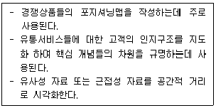
- 시계열분석
- 다차원척도법
- 컨조인트분석
- 회귀분석
- 군집분석
(정답률: 52%)
48. 경로 갈등에 대한 내용으로 옳지 않은 것은?
- 경로 구성원 간의 갈등은 여러 가지 다른 상황과 요인 때문에 발생하며, 넓은 맥락에서 갈등이 항상 나쁜 것은 아니다.
- 수평적 갈등은 동일한 경로단계 상의 구성원들 사이에서 발생하는 갈등을 의미한다.
- 수직적 갈등은 제조업자와 도매상 같이 서로 다른 경로단계를 차지하는 구성원들 사이에서 발생하는 갈등이다.
- 분배적 공정성은 분쟁을 해결하거나 자원을 할당하는 과정에서 다른 경로구성원들과 비교했을 때 동등하고 공평한 대우를 받는 것과 관련된다.
- 상호작용적 공정성이란 경로구성원에게 실질적인 자원할당이 적정하게 이루어졌는지에 대한 지각을 뜻한다.
(정답률: 68%)
49. 소비자가 지각한 가치를 기준으로 한 가격결정법에 대한 설명으로 옳지 않은 것은?
- 제품가격이 소비자들의 유보가격보다 높으면 소비자들은 비싸다고 인식한다.
- 최저수용가격보다 낮으면 가격은 싸다고 인식하지만 품질에 의심을 가진다.
- 소비자들이 해당 제품에 대해 지각하는 가치 수준에 맞추어 가격을 결정하는 방법이다.
- 준거가격이란 소비자가 적정하다고 판단하는 수준의 가격이다.
- 구매를 유도하려면 유보가격과 준거가격 사이에서 가격을 설정해야 한다.
(정답률: 51%)
50. 아래 글상자에 설명된 가격조정전략으로 옳은 것은?
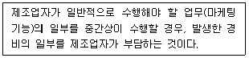
- 현금할인
- 거래할인
- 판매촉진지원금
- 수량할인
- 계절할인
(정답률: 34%)
51. 아래 글상자에서 설명하는 소매점 고객서비스의 유형으로 옳은 것은?
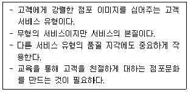
- 고객응대
- 정보제공
- 세일 및 사은행사
- 배달 및 배송
- 교환 및 환불
(정답률: 80%)
52. EDLP(everyday low price) 가격전략의 특징으로 옳지 않은 것은?
- 경쟁소매업체와 동일하거나 더 낮은 가격을 설정한다.
- 규모의 경제, 효율적 물류시스템, 경영 개선 등을 통한 저비용화가 이루어져야 실행 가능하다.
- 언제나 저가격으로 소비자가 구입시점을 지연시키지 않기 때문에 판매 예측이 가능하다.
- 경쟁자와의 지나친 가격전쟁 압박 때문에 세일광고에 많은 노력을 기울여야 한다.
- 경쟁사보다 저렴하지 않은 경우 가격 차액을 환불해 주기도 한다.
(정답률: 60%)
53. 신규고객 창출을 위한 CRM활동에 대한 설명으로 옳지 않은 것은?
- 마일리지 프로그램을 통해 구매액에 따른 포인트 적립 및 적립 포인트에 따른 혜택을 제공한다.
- 제휴마케팅을 통해 타 기업과의 공식적인 제휴를 맺음으로 타사 고객을 자사 고객으로 유치한다.
- 정기적 혹은 비정기적 이벤트를 전개하여 잠재고객을 확보한다.
- 고객센터, 홈페이지 등을 통해 잠재고객을 대상으로 프로모션 활동을 전개한다.
- 이탈고객의 리스트를 작성하고 이들 중 수익창출 가능성이 있는 고객들을 대상으로 프로모션 활동을 전개하여 재활성화한다.
(정답률: 40%)
54. 아래 글상자에서 설명하는 소비용품의 유형으로 가장 옳은 것은?
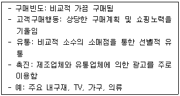
- 편의품
- 선매품
- 전문품
- 미탐색품
- 산업용품
(정답률: 71%)
55. 단품관리전략의 기대효과로 옳지 않은 것은?
- 품절이 줄어든다.
- 상품구색이 증가한다.
- 과잉 재고가 줄어든다.
- 매대생산성이 증가한다.
- 무리한 가격인하가 줄어든다.
(정답률: 58%)
56. 소매수명주기이론에서 단계별 소매상의 전략으로 옳지 않은 것은?
- 도입기에는 이익수준이 낮아 위험부담이 높기 때문에 투자를 최소화한다.
- 도약기에는 시장을 확장하고 수익을 확보하기 위한 공격적인 침투전략을 수행한다.
- 성장기에는 성장유지를 위해 투자수준을 높이며 시장위치를 선점하는 전략을 수행한다.
- 성숙기에는 소매개념을 수정하여 성숙기를 지속시키기 위한 전략을 수행한다.
- 쇠퇴기에는 자본의 지출을 최소화하며 시장에서의 탈출을 모색한다.
(정답률: 37%)
57. PR(public relations)에 대한 설명으로 옳지 않은 것은?
- 소비자뿐만 아니라 기업과 관련된 이해관계자들을 대상으로 한다.
- 제품 및 서비스에 대한 호의적 태도와 기업에 대한 신뢰도 구축을 병행한다.
- 기업을 알리는 보도나 캠페인을 통해 전반적인 여론의 지지를 얻고자 한다.
- 제품과 서비스에 대한 정보제공 및 교육 등의 쌍방향 커뮤니케이션 활동이다.
- 기업 활동에 영향을 미치는 주요 공중과의 관계구축을 통해 호의를 얻어내고자 하는 것이다.
(정답률: 63%)
58. 아래 글상자에 기술된 소매상의 변천과정과 경쟁에 대한 이론으로 옳은 것은?
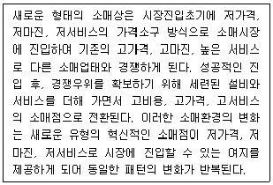
- 소매수레바퀴가설
- 적응행동이론
- 소매아코디언 이론
- 변증법적 과정
- 자연도태설
(정답률: 59%)
59. 집중화 전략에 대한 설명으로 옳은 것은?
- 전체 시장의 구매자들을 대상으로 동일한 마케팅전략을 집중하는 것이다.
- 하나의 구매자 세분시장을 대상으로 하여 그 시장에 마케팅전략을 집중하는 것이다.
- 상이한 욕구를 지닌 두 세분시장에 동일한 마케팅전략을 집중하는 것이다.
- 시너지 효과를 극대화하기 위해 현재적 구매자 세분시장과 잠재적 구매자 세분시장을 동시에 집중하는 것이다.
- 시장을 세분화하고 각각의 집단에 대해 상이한 전략을 개발하는 것이다.
(정답률: 63%)
60. 아래 글상자에서 설명하는 용어로 옳은 것은?
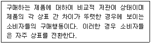
- 다양성 추구 구매행동
- 타성적 구매행동
- 부조화 감소 구매행동
- 복잡한 구매행동
- 비계획적 구매행동
(정답률: 58%)
61. 소셜 커머스(social commerce)에 대한 설명으로 옳지 않은 것은?
- 소셜 미디어와 온라인 미디어를 활용한 전자상거래의 일종이다.
- 초기에는 음식점, 커피숍, 공연 등 지역기반 서비스 상품에 대한 공동구매로 시작하였다.
- 일정수의 소비자들이 모여서 공동구매를 통해 가격 하락을 유도하기도 한다.
- 스마트폰을 이용한 모바일 소셜 커머스 판매량은 점점 낮아지는 추세이다.
- 상품 카테고리별로 좋은 상품을 공급할 수 있는 판매자를 발굴하고, 이들과 가격조건 등에 대해 협상하는 상품기획자의 역할이 중요하다.
(정답률: 79%)
62. 아래 글상자에서 풀전략(pull strategy)에 대한 설명으로 옳은 것은?
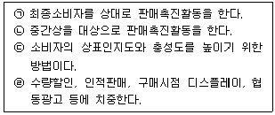
- ㉡, ㉢
- ㉡, ㉣
- ㉢, ㉣
- ㉠, ㉢
- ㉠, ㉣
(정답률: 58%)
63. 아래 글상자의 사례에서 사용된 소비자 판촉도구로 옳은 것은?
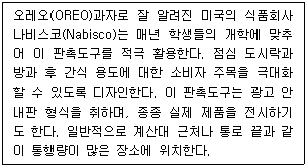
- 샘플(sample)
- PPL(product palcement)
- 쿠폰(coupon)
- POP(point of purchase)
- 가격할인 패키지(price packs)
(정답률: 73%)
64. 아래 글상자에서 설명하는 용어로 옳은 것은?
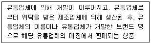
- National Brand
- Private Brand
- Private National Brand
- Family Brand
- Corporate Brand
(정답률: 74%)
65. 비주얼 프리젠테이션에 대한 설명으로 옳지 않은 것은?
- 테마에 따른 시각적 전시공간을 말한다.
- 흔히 쇼 스테이지나 쇼윈도 등에서 전개된다.
- 고객들의 눈에 띄기 쉬운 공간에 잡화 등을 활용하여 사용법이나 용도 등을 제시한다.
- 강조하고 싶은 상품만을 진열하며 POP 등에 상품의 기능을 담아 소개한다.
- AIDMA법칙의 A(주의)나 I(흥미)를 유도하는데 효과적인 방법이다.
(정답률: 57%)
66. 아래 글상자에서 설명하는 용어로 옳은 것은?
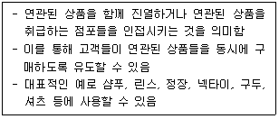
- Mix Merchandising
- Cross Merchandising
- Double Merchandising
- Visual Merchandising
- Triple Merchandising
(정답률: 68%)
67. 격자형 레이아웃(grid layout)에 대한 설명으로 옳지 않은 것은?
- 레이아웃 변경이 자유롭고 상품의 노출도가 크다.
- 어느 건물에나 적용할 수 있어 건물 코스트가 낮아진다.
- 통로 낭비가 적어 면적을 유용하게 사용할 수 있고, 많은 상품 진열이 가능하다.
- 동선계획으로 고객 흐름을 통제할 수 있다.
- 매장 진열 구조의 파악이 용이하다.
(정답률: 54%)
68. 매장 외관 중 쇼윈도(show window)에 관한 설명으로 옳지 않은 것은?
- 매장의 외관을 결정짓는 요소이며, 주된 연출공간이다.
- 수평라인보다 돌출하거나 들어가는 각진형은 소비자를 입구쪽으로 유도한다.
- 윈도우가 없으면 궁금해진 소비자가 매장으로 들어오는 효과가 발생하기도 한다.
- 매장의 제품을 진열하는 효과는 있으나 점포의 이미지를 표현할 수는 없다.
- 윈도우 설치형태에 따라 폐쇄형, 반개방형, 개방형, 섀도박스(shadow box)형이 있다.
(정답률: 64%)
69. 점포 디자인의 요소로 옳지 않은 것은?
- 외장 디자인
- 내부 디자인
- 진열 부분
- 레이아웃
- 점포 면적
(정답률: 74%)
70. 공급업체와 유통업체가 장기적 협력관계를 구축하려고 할 경우, 공급업체가 유통업체를 평가하는 기준을 모두 고르면?
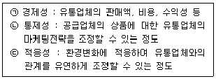
- ㉠
- ㉠, ㉡
- ㉠, ㉢
- ㉡, ㉢
- ㉠, ㉡, ㉢
(정답률: 74%)
4과목: 유통정보
71. 데이터마이닝 기법과 CRM에서의 활용용도를 연결한 것으로 가장 옳지 않은 것은?
- 군집화 규칙 - 제품 카테고리
- 분류 규칙 - 고객이탈 수준 등급
- 순차 패턴 - 로열티 강화 프로그램
- 일반화 규칙 - 연속 판매 프로그램
- 연관 규칙 - 상품 패키지 구성 정보
(정답률: 31%)
72. 아래 글상자의 내용에 공통적으로 관련된 정보기술로 옳은 것은?
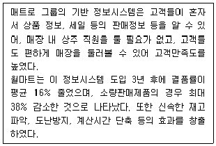
- RFID
- BEACON
- BYOD
- FINTECH
- TAG
(정답률: 61%)
73. O2O (Online to Off-line) 커머스에 대한 설명으로 옳은 것은?
- O2O 커머스는 온라인과 오프라인 사이의 경계를 사라지게 만들어서 소비자들에게 보다 편리한 쇼핑을 하도록 도움을 준다.
- O2O 커머스는 O2O 플랫폼 사업자가 소비자와 소비자를 연결함으로써 소비자들 사이의 편리한 거래에 도움을 제공해 준다.
- O2O 커머스는 재고관리 비용을 증가시키기 때문에 유통업체 입장에서 선호되지 않고 있다,
- O2O 커머스는 사물인터넷 기술 발전에 따라 점진적으로 감소하고 있다.
- O2O 커머스는 결재 분야의 핀테크 기술과의 연결성 문제로 발전하지 못하고 있다.
(정답률: 67%)
74. 의사결정시스템에 대한 설명으로 옳지 않은 것은?
- 최고경영층은 주로 비구조적 의사결정에 대한 문제에 직면해 있고, 운영층은 주로 구조적 의사결정에 대한 문제에 직면해 있다.
- 운영층은 의사결정지원시스템을 이용해 마케팅 계획설계, 예산 수립 계획 등과 같은 업무를 한다.
- 의사결정지원시스템은 수요 예측 문제, 민감도 분석 등에 활용된다.
- 의사결정지원시스템을 이용해 의사결정의 품질을 높이기 위해서는 의사결정지원시스템에서 활용하는 데이터의 품질을 개선해야 한다.
- 의사결정지원시스템의 의사결정 품질 개선을 위해 딥러닝(deep learning)과 같은 고차원적 알고리즘(algorism)이 활용된다.
(정답률: 38%)
75. 엑세스 로그파일(access log file)을 통해 얻을 수 있는 정보로 가장 옳지 않은 것은?
- 방문 경로
- 사용자의 아이디
- 웹사이트 방문 시간
- 웹브라우저의 설치 시기
- 웹사이트에서 수행한 작업 내용
(정답률: 71%)
76. 아래 글상자의 괄호안에 들어갈 용어를 순서대로 짝지은 결과로 옳은 것은?
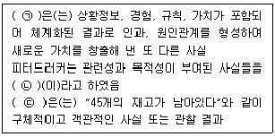
- ㉠ 데이터, ㉡ 정보, ㉢ 지식
- ㉠ 지혜, ㉡ 지식, ㉢ 데이터
- ㉠ 정보, ㉡ 지식, ㉢ 사실
- ㉠ 지식, ㉡ 정보, ㉢ 데이터
- ㉠ 지식, ㉡ 데이터, ㉢ 사실
(정답률: 60%)
77. 가망고객발굴을 위해 기존 고객에 대한 CRM 분석 전략에 대한 설명으로 옳지 않은 것은?
- 고객프로필분석 - 연령, 직업, 취미, 학력 등 전체 고객층 분석
- 하우스-홀딩분석- 현 고객의 가족상황, 프로필, 성향 등 분석
- 인 바운드분석 - 담당영업사원, A/S사원의 피드백이나 불만접수 대응 분석
- 현고객구성원분석- 고객의 성격, 사용실태, 충성도 분석
- 외부데이터분석 - 제휴업체의 고객데이터 분석
(정답률: 38%)
78. 웹마이닝 분석기법에 대한 설명으로 옳지 않은 것은?
- 웹콘텐츠마이닝 - 웹 사이트를 구성하는 페이지 내용 중 유용한 정보를 추출하기 위한 기법
- 웹구조마이닝 - 웹상에 존재하는 하이퍼텍스트로 구성된 문서들의 구조에 대하여 마이닝하는 기법
- 웹사용마이닝 - 방문자들의 웹페이지 사용패턴을 분석하는 기법
- 웹사용마이닝 - 웹로그파일분석은 웹사용마이닝의 한 부분
- 웹콘텐츠마이닝 - 텍스트 중심으로 분석을 수행하는 데이터마이닝 기법
(정답률: 63%)
79. 아래 글상자에서 설명하는 임대형 쇼핑몰 구축 솔루션으로 가장 옳은 것은?
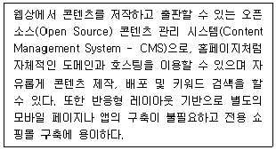
- 가비아(Gabia)
- 고도몰(godomall)
- 카페24(cafe24)
- 메이크샵(MakeShop)
- 워드프레스(WordPress)
(정답률: 38%)
80. 아래 글상자에서 설명하는 용어로 가장 옳은 것은?
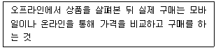
- 모루밍(Morooming)
- 쇼루밍(Showrooming)
- 웹루밍(Webrooming)
- 역모루밍(Reverse Morooming)
- 역쇼루밍(Reverse Showrooming)
(정답률: 67%)
81. 2가지 크기와 6가지 색상이 있는 제품을 포장지의 삽화 유무로 나누어 낱개로 또한 10개들이 박스와 20개들이 박스로도 판매될 경우 각 조합을 고유하게 식별하기 위해 필요한 상품식별코드(GTIN)의 총수로 가장 옳은 것은?
- 10개
- 24개
- 30개
- 36개
- 96개
(정답률: 44%)
82. 아래 글상자에서 설명하는 용어로 가장 옳은 것은?
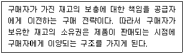
- EDI
- VMI
- CAO
- CMI
- QR
(정답률: 47%)
83. 바코드 기반의 POS시스템을 통해 관리되는 데이터에 대한 설명으로 옳지 않은 것은?
- 제조사별 단품순위
- 판매실적 구성비
- 단품별 판매순위
- 단품별 판매동향
- 제품별 유통이력
(정답률: 61%)
84. POS시스템에 관련된 설명으로 옳지 않은 것은?
- 판매시점 기준 정보관리 지원
- 상품 판매동향 분석을 통해 인기/비인기 제품을 신속하게 파악할 수 있도록 지원
- 시스템 기기의 사양이 다르면 점포간 판매동향 비교, 분석이 불가능
- '무엇이 몇 개나 팔렸는가?'에 대한 정보를 제공
- 인터넷 기반으로 구축된 경우 매장 이외의 장소에서도 매출 등 정보 확인 가능
(정답률: 70%)
85. 아래 글상자의 내용에 부합되는 SCM 주요기법의 종류로 가장 옳은 것은?
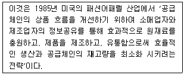
- QR(Quick Response)
- CAO(Computer Assisted Ordering)
- CMI(Co-Managed Inventory)
- CRP(Continuous Replenishment Program)
- ECR(Efficient Consumer Response)
(정답률: 68%)
86. 효율적인 지식베이스 시스템이 되기 위한 조건으로 가장 옳지 않은 것은?
- 대량의 지식의 고속 탐색 및 갱신이 요구된다.
- 추론 기능과 유연한 지식 조작 기능이 요구된다.
- 지식의 표현은 이해하기 쉬운 표현법이 요구된다.
- 고도의 인간-기계 인터페이스(Man-Machine Interface) 기능이 요구된다.
- 취급 지식은 비구조화된 데이터 군을 단위로 하는 데이터가 요구된다.
(정답률: 69%)
87. 지식 포착 기법에 대한 설명으로 가장 옳지 않은 것은?
- 인터뷰 - 개인의 형식적 지식을 암묵적 지식으로 전환하는데 사용하는 기법이다.
- 현장관찰 - 관찰대상자가 문제를 해결하는 행동을 할 때 관찰, 해석, 기록하는 프로세스이다.
- 브레인스토밍 - 문제에 대하여 둘 이상의 구성원들이 자유롭게 아이디어를 생산하는 비구조적 접근방법이다.
- 스토리 - 조직학습을 증대시키고, 공통의 가치와 규칙을 커뮤니케이션하고, 암묵적 지식의 포착, 코드화, 전달을 위한 뛰어난 도구이다.
- 델파이 방법 - 다수 전문가의 지식포착 도구로 사용되며, 일련의 질문서가 어려운 문제를 해결하는데 대한 전문가의 의견을 수렴하기 위해 사용된다.
(정답률: 68%)
88. 지식경영이 중요한 경영기법의 하나로 자리 잡게 된 배경으로 가장 옳지 않은 것은?
- 지식경영은 프로젝트 지식을 재활용할 수 있도록 유지하는 기회를 제공하기 때문이다.
- 지식경영은 복잡하고 중요한 의사결정을 빠르고, 정확하고, 반복적으로 수행할 수 있도록 지원하기 때문이다.
- 지식경영은 조직의 효율성과 효과성 향상을 위해 지식을 기반으로 혁신하여 경쟁할 수 있기 때문이다.
- 지식경영은 대화와 토론을 장려하여 효과적 협력과 지식공유를 위한 단초를 제공하기 때문이다.
- 지식경영은 조직이 지식경제에서 빠르게 변화하는 경쟁 환경에 효과적으로 대응하기 위해 지식노동자 개인의 암묵적 지식 축적을 장려하기 때문이다.
(정답률: 66%)
89. 아래 글상자의 ( )안에 들어갈 용어로 옳은 것은?
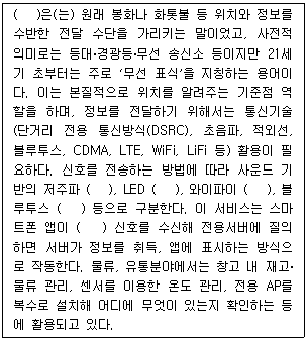
- 드론(Drone)
- 무인자동체
- 비콘(Beacon)
- 딥러닝(Deep-learning)
- NFC(Near Field Communication)
(정답률: 62%)
90. 유통 및 물류 부분에서 사물인터넷 (Internet of Things) 기술 활용에 대한 설명으로 옳지 않은 것은?
- 아마존(Amazon)은 유통현장에서 사물인터넷 기술을 이용해 무인매장에서 활용할 수 있는 시스템인 아마존고(Amazon Go)를 개발하였다.
- 유통업체에서는 전자상거래 규모 증대에 따라 다양한 유통채널(예, 온라인, 모바일) 통합을 위해 IT 부분에 많은 투자를 하고 있다.
- 유통업체에서는 공급사슬에서의 정보공유가 기업의 경쟁력을 약화시키기 때문에 정보공유에 부정적인 견해를 가지고 있다.
- 최근 유통업체들은 고객 빅데이터 분석을 통해 고객의 특성을 파악하고, 이에 기반해 다양한 고객관계관리 전략을 수립해 활용하고 있다.
- 최근 물류업체들은 물류 효율성을 높이기 위해 자율주행 기술을 연구하고 있다.
(정답률: 75%)